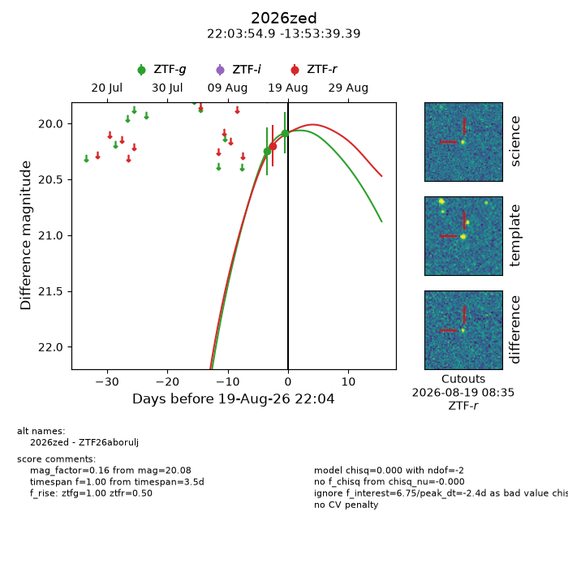
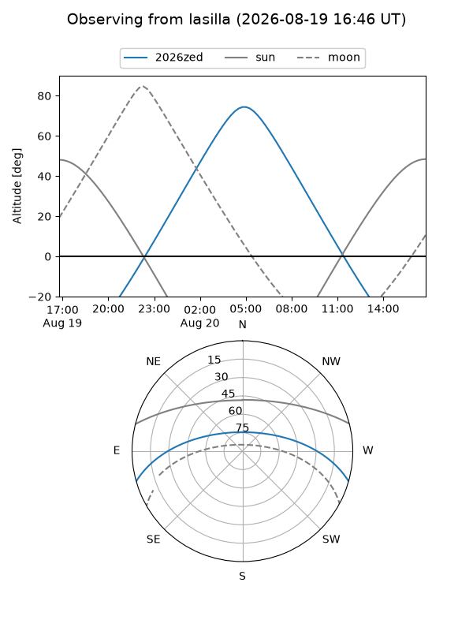
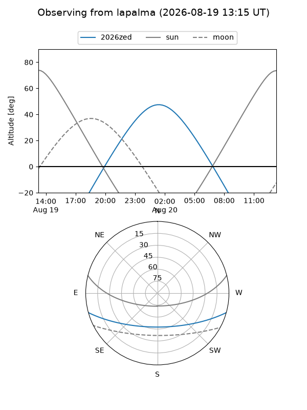
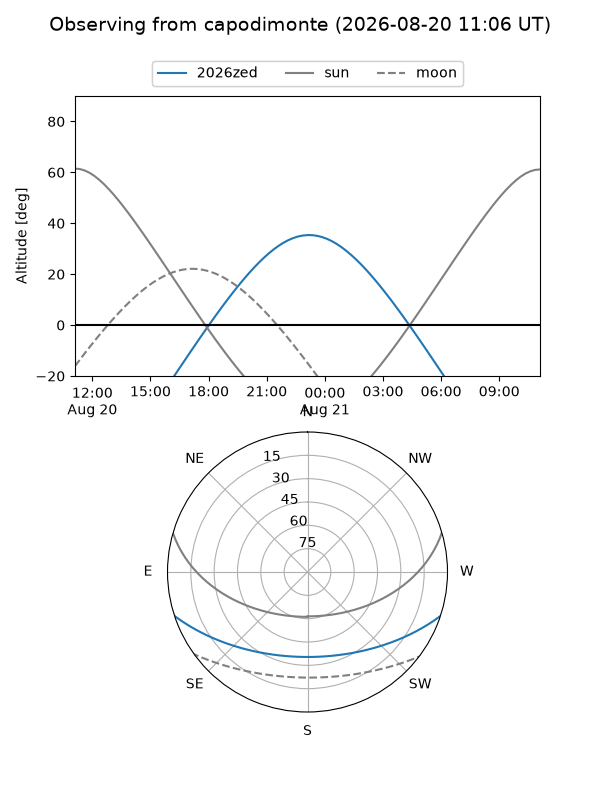
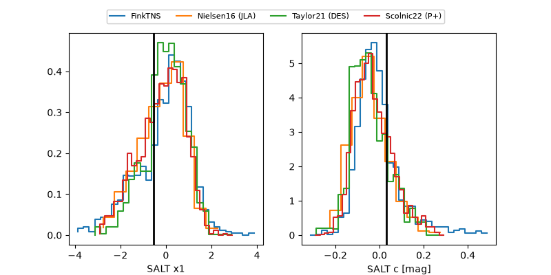

2026zed
Target 2026zed at 2026-08-20 10:05
Aliases and brokers:
FINK-ZTF: ztf.fink-portal.org/ZTF26aborulj
Lasair-ZTF: lasair-ztf.lsst.ac.uk/objects/ZTF26aborulj
ALeRCE-ZTF: alerce.online/object/ZTF26aborulj
YSE-PZ: ziggy.ucolick.org/yse/transient_detail/2026zed
TNS name: wis-tns.org/object/2026zed
Direct TNS query: direct search
alt names
ZTF26aborulj (ztf,fink_ztf)
2026zed (tns,yse)
Coordinates:
equatorial (ra, dec) = 330.9789,-13.89427
equatorial (HMS+DMS) = 22:03:54.94,-13:53:39.39
galactic (l, b) = (43.0675,-48.82806)
Flags:
TNS type: nan
peak dt: -1.9
Photometry:
last ztfg=20.08, ztfr=20.20
2 ztfg, 1 ztfr detections
Lightcurve

Visibility



Additional plots
